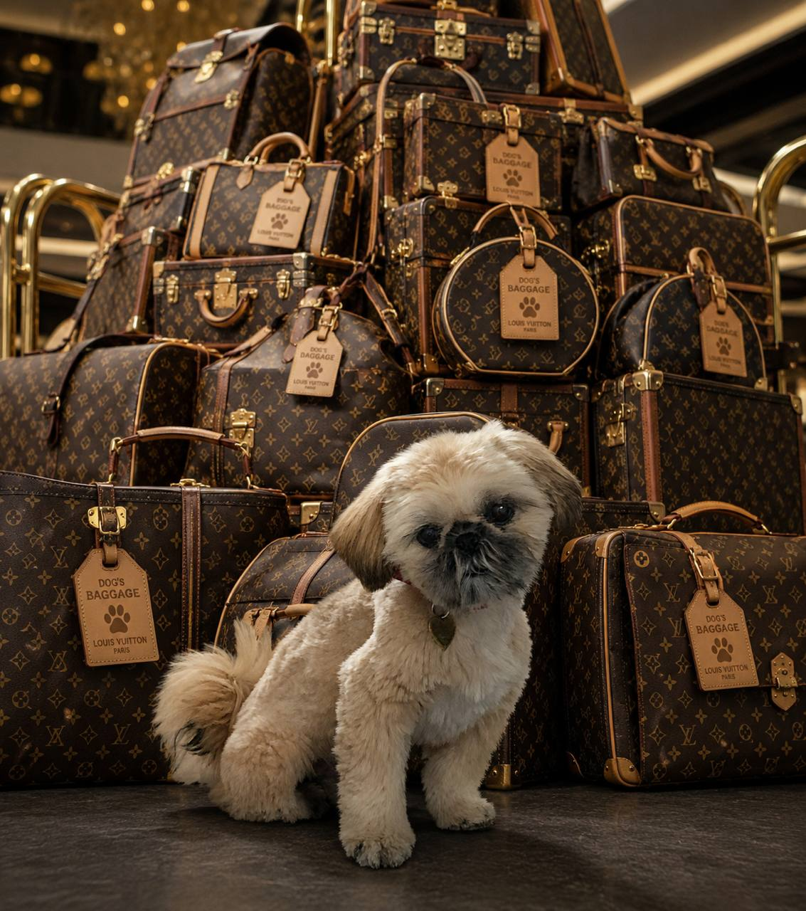

Hundepasning mens familien er i Vietnam — 6. juli til 2. august 2026.

📅 Vi afrejser mandag 6. juli kl. 16:00 og er hjemme søndag 2. august.
Det svarer til 4 uger: uge 28, 29, 30 og 31.
Ugeplan
Hvem passer Wilma?
Mads Nygaard
Thomas
Uge 28
6.–12. juli
Mads Nygaard
Uge 29
13.–19. juli
Thomas
Thomas er hjemme fra Frankrig søndag 13. juli om morgenen
Uge 30
20.–26. juli
Mads Nygaard
Uge 31
27. juli – 2. august
Thomas
Vi er hjemme søndag 2. august
Til Thomas og Mads
Sådan passer du Wilma
🥣
Mad & vand
Sørg altid for vand og tørkost i skålene — hun spiser når hun er sulten og overspiser ikke
Normalt får hun ikke vores mad, og slet ikke ved bordet
Det er ok at give hende lidt en gang imellem — lidt pølse eller ost (hun elsker ost). Læg det altid i hendes skål, aldrig direkte fra bordet
Fodrer man hende ved bordet, plager hun om det ved bordet i al fremtid
🦴 Godbidder bruges til at lokke hende til at komme — og gives efter tur, efter hun har tisset/gjort sit i haven, og ellers bare en gang imellem.
🦮
Gåture
2–3 ture om dagen
Hun har ikke behov for lange ture, men kan godt gå langt
Hun bliver doven hvis hun ikke kommer ud. Hvis der er gået for lang tid, gider hun ikke — træk lidt i snoren, så overgiver hun sig. Bare vis hende at det er jer der bestemmer
😴
Sove
Hun sover meget
Hun plejer at sove i fodenden af sengen om natten — prøv jer frem med hvad der passer jer
Hun har sin kurv med — den kan hun også sove i
Hvis der står en taske på gulvet lægger hun sig gerne på den — flyt den bare, eller lok hende med en godbid
Pas på: hun kan blive lidt sur hvis man løfter hende mens hun sover eller chiller — bedre at bruge godbidder til at lokke hende
🎾
Leg
Hun gider ikke bolde og aner ikke hvad aport betyder — prøv endelig at se om I kan lære hende det med en pind
Hun elsker sine tøjdyr. Prøv at vriste det ud af munden på hende og kast det — hun knurrer men det er bare leg
Godbidder er den bedste pædagogik — anerkend når hun gør som man beder om. Men forbered jer: vi er godt nede af på intelligensskalaen 😄
Hun elsker at være på stranden, men går kun i vandet ved et uheld. Kan løbe løs — men tjek om det er tilladt i sommerhalvåret
🎒
Medbringer
To skåle — én til vand, én til mad
Snor
Sele til snor
Tørkost
Godbidder
Poser til hømhøm — op til ens egen samvittighed om man opsamler. Varmer godt i hånden om vinteren 🤲
Hundekurv
Tøjdyr
📋
Generelt
Hun er rimelig nem generelt
Hun fælder ikke
📱 Skriv endelig hvis der er noget — vi tjekker beskederne når vi kan fra Vietnam.